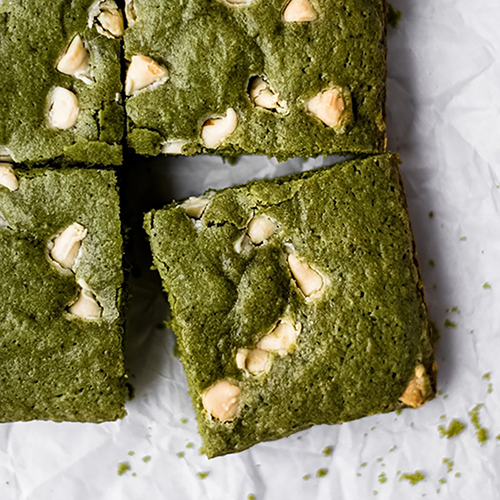

Chewy Matcha Brownies with White Chocolate Chips
These matcha brownies are soft, chewy and perfectly delicious, guaranteed to become a family favorite dessert!
Simple ingredients and easy to follow instructions to make perfect matcha white chocolate brownies that are vibrant and fun.
Green tea brownies are the perfect balance of matcha tea flavor a delicious white chocolate decadence.
Matcha brownies are a simple one bowl dessert recipe that can be prepped and in the oven in less than 10 minutes! The flavor of the matcha green tea in these matcha brownies is absolutely delightful and makes for a unique and fun dessert.
Ingredients
- Butter: This recipe calls for salted butter. If you only have unsalted butter, add about ¼ teaspoon of salt.
- Matcha Green Tea Powder
- Sugar: Granulated white sugar.
- Eggs
- Vanilla Extract
- Flour: All purpose white flour.
- White Chocolate
Steps
- Preheat oven 350°F
- Line 8 inch (8x8) baking pan with parchment paper. See notes for tips on helping parchment paper to stay flat.
- In a large bowl, combine dry ingredients (flour, sugar and matcha powder). Using sifter or whisk, mix until fully combined and matcha powder is evenly incorporated.
- Add melted butter, eggs and vanilla. Beat with hand mixer until fully combined.
- Hand mix in white chocolate chips.
- Using spatula, transfer batter into parchment lined cake pan.
- Once all your matcha brownie batter is in the pan, using a spoon or spatula, lightly flatten out your matcha brownie batter so that the surface is level.
- Cook on 350°F for approximately 35-40 minutes or until full cooked. Remove from oven and allow to fully cool in baking pan.
- Remove matcha brownies from baking pan, slice and enjoy!